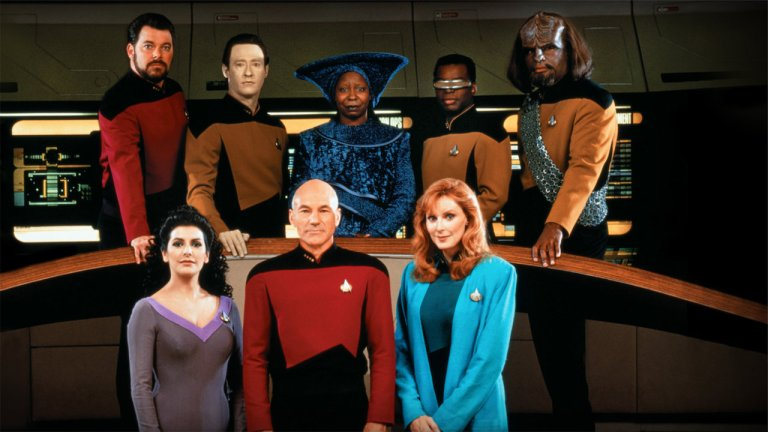

İlgi Alanlarım
Sevdiğim Diziler
Star Trek: The Next Generation
Uzay Yolu: Yeni Nesil (Star Trek: The Next Generation) Gene Roddenbery tarafından yaratılmış olan kurgusal Uzay Yolu evreninde geçen bir bilim kurgu dizisidir. Türkiye'de 1990-1997 yılları arasında Star TV'de yayınlanmıştır.
Bu dizide en çok dikkat çeken Enterprise gemisinin kaptanı Jean-Luc Picard'dır. Tabii onun yanında filonun tek robot asker Data,tek Klingon asker Worf gibi birçok ikonik karakteri de mevcuttur.